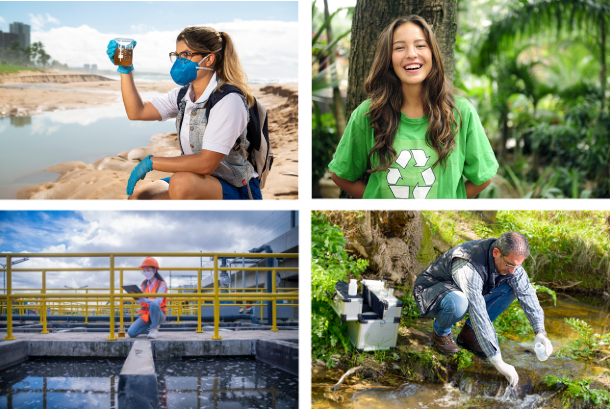

Sobre o curso
O curso superior Tecnologia em Saneamento Ambiental, do Instituto Federal de Educação, Ciências e Tecnologia do Ceará campus de Limoeiro do Norte, assim como outros cursos técnicos e tecnológicos da instituição, é uma herança do antigo Instituto Centro de Ensino Tecnológico - CENTEC, que passou por outras denominações (exemplo: CEFET), e que, em 2008, foi federalizado por meio da Lei nº 11.892, de 29 de dezembro de 2008. Assim, o IFCE - campus de Limoeiro do Norte e o curso superior Tecnologia em Saneamento Ambiental completam, em 2022, treze anos de atividade, sendo que a primeira oferta do referido curso foi realizada apenas em 2009.
O curso superior Tecnologia em Saneamento Ambiental pertence à Área Profissional/Eixo Tecnológico Ambiente e Saúde, com ingresso anual, mas com oferta de disciplinas semestral (Regime Escolar semestral), tendo entrada anual de 40 alunos no turno matutino, com regime de matrícula semestral por créditos. Atualmente, a carga horária total do curso é 2.460 horas, sendo que destas 2.100 horas são destinadas ao cumprimento de créditos dos componentes curriculares e 360 horas são destinadas ao Estágio Supervisionado Obrigatório. Desta forma, o curso superior Tecnologia em Saneamento Ambiental possui 7 semestres letivos, sendo 6 para o cumprimento dos componentes curriculares e 1 para a realização do Estágio Supervisionado Obrigatório, sendo o tempo de integralização curricular de 3,5 anos.
O curso superior Tecnologia em Saneamento Ambiental forma profissionais com conhecimentos, habilidades e competências em relação a tecnologias da área de saneamento ambiental, voltados ao planejamento, à gestão e à operacionalização de sistemas de saneamento ambiental, considerando os impactos sociais, ambientais, culturais e econômicos das ações e atividades antrópicas sobre o meio ambiente, com ações sustentáveis, pautadas pela ética e cidadania consciente e crítica. Nesse sentido, o referido curso proporciona condições para a formação de um profissional com capacidade e aptidão para pesquisar, elaborar e prover soluções que permitam a harmonização das diversas atividades humanas com o meio físico e os ecossistemas, a partir da adoção dos princípios da sustentabilidade, da responsabilidade social e ambiental, da integração sociedade-natureza e da gestão de conflitos da relação do homem com o meio ambiente.

Informações adicionais
- Área de estudo: Ambiente e Saúde.
- Modalidade: Tecnológica.
- Duração: 7 semestres (3,5 anos).
- Forma de ingresso: Sistema de Seleção Unificada (Sisu). Edital de transferidos e diplomados.
- Requisitos: Ensino Médio completo.
- Oferta: 40 vagas anuais.
- Turno de funcionamento: Matutino.
Perfil do profissional
Tecnólogos habilitados para atuarem de forma efetiva e dinâmica nas áreas de Saneamento, Meio Ambiente e Saúde Coletiva, promovendo melhorias na qualidade de vida da população e no desenvolvimento humano de maneira sustentável e contribuindo para a preservação da vida no planeta.
Profissionais aptos para:
- Elaborar sistemas urbanos de abastecimento de água, tratamento de esgotos e resíduos sólidos, drenagem e controle de emissões atmosféricas;
- Operar redes de monitoramento de ar, água e solo; desenvolver campanhas educativas ligadas às áreas sanitária e ambiental;
- Atuar junto às vigilâncias sanitária, epidemiológica e ambiental e aos projetos de gestão pública da saúde.
Área de atuação profissional
O profissional pode atuar em empresas públicas e privadas de saneamento ambiental e gestão do meio ambiente e da saúde; laboratórios de controle da qualidade ambiental e de estudos de impacto ambiental; indústrias em geral, em seus setores de gerenciamento ambiental e de resíduos, focados em produção sustentável e ambientalmente correta.
